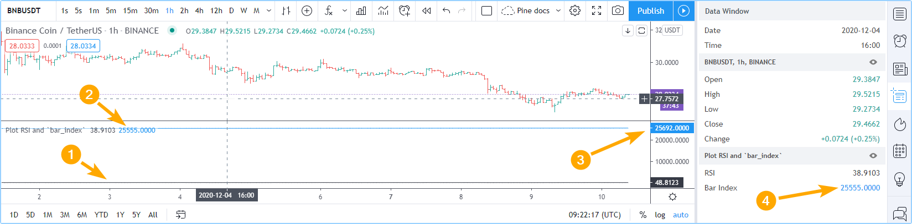

Debugging¶
Introduction¶
TradingView’s close integration between the Pine Script® Editor and charts allows for efficient and interactive debugging of Pine Script® code. Once a programmer understands the most appropriate technique to use in each situation, they will be able to debug scripts quickly and thoroughly. This page demonstrates the most useful techniques to debug Pine Script® code.
If you are not yet familiar with Pine Script®’s execution model, it is important that you read the Execution model page of this User Manual so you understand how your debugging code will behave in the Pine Script® environment.
The lay of the land¶
Values plotted by Pine scripts can be displayed in four distinct places:
- Next to the script’s name (controlled by the “Indicator Values” checkbox in the “Chart settings/Status Line” tab).
- In the script’s pane, whether your script is a chart overlay or in a separate pane.
- In the scale (only displays the last bar’s value and is controlled by the “Indicator Last Value Label” checkbox in the “Chart settings/Scale” tab).
- In the Data Window (which you can bring up using the fourth icon down, to the right of your chart).
Note the following in the preceding screenshot:
- The chart’s cursor is on the dataset’s first bar, where bar_index is zero. That value is reflected next to the indicator’s name and in the Data Window. Moving your cursor on other bars would update those values so they always represent the value of the plot on that bar. This is a good way to inspect the value of a variable as the script’s execution progresses from bar to bar.
- The
titleargument of our plot() call, “Bar Index”, is used as the value’s legend in the Data Window. - The precision of the values displayed in the Data Window is dependent on the chart symbol’s tick value. You can modify it in two ways:
- By changing the value of the “Precision” field in the script’s “Settings/Style” tab. You can obtain up to eight digits of precision using this method.
- By using the
precisionparameter in your script’s indicator() or strategy() declaration statement. This method allows specifying up to 16 digits precision.
- The plot() call in our script plots the value of bar_index in the indicator’s pane, which shows the increasing value of the variable.
- The scale of the script’s pane is automatically sized to accommodate the smallest and largest values plotted by all plot() calls in the script.
Displaying numeric values¶
When the script’s scale is unimportant¶
The script in the preceding screenshot used the simplest way to inspect numerical values: a plot() call, which plots a line corresponding to the variable’s value in the script’s display area. Our example script plotted the value of the bar_index built-in variable, which contains the bar’s number, a value beginning at zero on the dataset’s first bar and increased by one on each subsequent bar. We used a plot() call to plot the variable to inspect because our script was not plotting anything else; we were not preoccupied with preserving the scale for other plots to continue to plot normally. This is the script we used:
//@version=5
indicator("Plot `bar_index`")
plot(bar_index, "Bar Index")
When the script’s scale must be preserved¶
Plotting values in the script’s display area is not always possible. When we already have other plots going on and adding debugging plots of variables whose values fall outside the script’s plotting boundaries would make the plots unreadable, another technique must be used to inspect values if we want to preserve the scale of the other plots.
Suppose we want to continue inspecting the value of bar_index, but this time in a script where we are also plotting RSI:
//@version=5
indicator("Plot RSI and `bar_index`")
r = ta.rsi(close, 20)
plot(r, "RSI", color.black)
plot(bar_index, "Bar Index")
Running the script on a dataset containing a large number of bars yields the following display:
where:
- The RSI line in black is flat because it varies between zero and 100, but the indicator’s pane is scaled to show the maximum value of bar_index, which is
25692.0000. - The value of bar_index on the bar the cursor is on is displayed next to the indicator’s name, and its blue plot in the script’s pane is flat.
- The
25692.0000value of bar_index shown in the scale represents its value on the last bar, so the dataset contains 25693 bars. - The value of bar_index on the bar the cursor is on is also displayed in the Data Window, along with that bar’s value for RSI just above it.
In order to preserve our plot of RSI while still being able to inspect the value or bar_index, we will plot the variable using plotchar() like this:
//@version=5
indicator("Plot RSI and `bar_index`")
r = ta.rsi(close, 20)
plot(r, "RSI", color.black)
plotchar(bar_index, "Bar index", "", location.top)
where:
- Because the value of bar_index is no longer being plotted in the script’s pane, the pane’s boundaries are now those of RSI, which displays normally.
- The value plotted using plotchar() is displayed next to the script’s name and in the Data Window.
- We are not plotting a character with our plotchar() call, so the third argument is an empty string (
""). We are also specifying location.top as thelocationargument, so that we do not put the symbol’s price in play in the calculation of the display area’s boundaries.
Displaying strings¶
Pine Script® labels must be used to display strings. Labels only appear in the script’s display area; strings shown in labels do not appear in the Data Window or anywhere else.
Labels on each bar¶
The following script demonstrates the simplest way to repetitively draw a label showing the symbol’s name:
//@version=5
indicator("Simple label", "", true)
label.new(bar_index, high, syminfo.ticker)
By default, only the last 50 labels will be shown on the chart. You can increase this amount up to a maximum of 500 by using the max_labels_count parameter in your script’s indicator() or strategy() declaration statement. For example:
indicator("Simple label", "", true, max_labels_count = 500)
Labels on last bar¶
As strings manipulated in Pine scripts often do not change bar to bar, the method most frequently used to visualize them is to draw a label on the dataset’s last bar.
Here, we use a function to create a label that only appears on the chart’s last bar. Our f_print() function has only one parameter, the text string to be displayed:
//@version=5
indicator("print()", "", true)
print(txt) =>
// Create label on the first bar.
var lbl = label.new(bar_index, na, txt, xloc.bar_index, yloc.price, color(na), label.style_none, color.gray, size.large, text.align_left)
// On next bars, update the label's x and y position, and the text it displays.
label.set_xy(lbl, bar_index, ta.highest(10)[1])
label.set_text(lbl, txt)
print("Multiplier = " + str.tostring(timeframe.multiplier) + "\nPeriod = " + timeframe.period + "\nHigh = " + str.tostring(high))
print("Hello world!\n\n\n\n")
Note the following in our last code example:
- We use the
print()function to enclose the label-drawing code. While the function is called on each bar, the label is only created on the dataset’s first bar because of our use of the var keyword when declaring thelblvariable inside the function. After creating it, we only update the label’s x and y coordinates and its text on each successive bar. If we did not update those values, the label would remain on the dataset’s first bar and would only display the text string’s value on that bar. Lastly, note that we useta.highest(10)[1]to position the label vertically, By using the highest high of the previous 10 bars, we prevent the label from moving during the realtime bar. You may need to adapt this y position in other contexts. - We call the
print()function twice to show that if you make multiple calls because it makes debugging multiple strings easier, you can superimpose their text by using the correct amount of newlines (\n) to separate each one. - We use the str.tostring() function to convert numeric values to a string for inclusion in the text to be displayed.
Debugging conditions¶
Single conditions¶
Many methods can be used to display occurrences where a condition is met. This code shows six ways to identify bars where RSI is smaller than 30:
//@version=5
indicator("Single conditions")
r = ta.rsi(close, 20)
rIsLow = r < 30
hline(30)
// Method #1: Change the plot's color.
plot(r, "RSI", rIsLow ? color.fuchsia : color.black)
// Method #2: Plot a character in the bottom region of the display.
plotchar(rIsLow, "rIsLow char at bottom", "▲", location.bottom, size = size.small)
// Method #3: Plot a character on the RSI line.
plotchar(rIsLow ? r : na, "rIsLow char on line", "•", location.absolute, color.red, size = size.small)
// Method #4: Plot a shape in the top region of the display.
plotshape(rIsLow, "rIsLow shape", shape.arrowup, location.top)
// Method #5: Plot an arrow.
plotarrow(rIsLow ? 1 : na, "rIsLow arrow")
// Method #6: Change the background's color.
bgcolor(rIsLow ? color.new(color.green, 90) : na)
Note that:
- We define our condition in the
rIsLowboolean variable and it is evaluated on each bar. Ther < 30expression used to assign a value to the variable evaluates totrueorfalse(ornawhenrisna, as is the case in the first bars of the dataset). - Method #1 uses a change in the color of the RSI plot on the condition. Whenever a plot’s color changes, it colors the plot starting from the preceding bar.
- Method #2 uses plotchar() to plot an up triangle in the bottom part of the indicator’s display. Using different combinations of positions and characters allows the simultaneous identification of multiple conditions on a single bar. This is one of our preferred methods to identify conditions on the chart.
- Method #3 also uses a plotchar() call, but this time the character is positioned on the RSI line.
In order to achieve this, we use location.absolute and Pine Script®’s
?: ternary conditional operator to define a conditional expression
where a y position is used only when our
rIsLowcondition is true. When it is not true,nais used, so no character is displayed. - Method #4 uses plotshape() to plot a blue up arrow in the top part of the indicator’s display area when our condition is met.
- Method #5 uses plotarrow() to plot a green up arrow at the bottom of the display when our condition is met.
- Method #6 uses bgcolor() to change the color of the background when our condition is met. The ternary operator is used once again to evaluate our condition.
It will return
color.greenwhenrIsLowis true, and thenacolor (which does not color the background) whenrIsLowis false orna. - Lastly, note how a boolean variable with a
truevalue displays as1in the Data Window.falsevalues are denoted by a zero value.
Compound conditions¶
Programmers needing to identify situations where more than one condition is met must build compound conditions by aggregating individual conditions using the and logical operator. Because compound conditions will only perform as expected if their individual conditions trigger correctly, you will save yourself many headaches if you validate the behavior of individual conditions before using a compound condition in your code.
The state of multiple individual conditions can be displayed using a technique like this one, where four individual conditions are used to build our bull compound condition:
//@version=5
indicator("Compound conditions")
periodInput = input.int(20)
bullLevelInput = input.int(55)
r = ta.rsi(close, periodInput)
// Condition #1.
rsiBull = r > bullLevelInput
// Condition #2.
hiChannel = ta.highest(r, periodInput * 2)[1]
aboveHiChannel = r > hiChannel
// Condition #3.
channelIsOld = hiChannel >= hiChannel[periodInput]
// Condition #4.
historyIsBull = math.sum(rsiBull ? 1 : -1, periodInput * 3) > 0
// Compound condition.
bull = rsiBull and aboveHiChannel and channelIsOld and historyIsBull
hline(bullLevelInput)
plot(r, "RSI", color.black)
plot(hiChannel, "High Channel")
plotchar(rsiBull ? bullLevelInput : na, "rIsBull", "1", location.absolute, color.green, size = size.tiny)
plotchar(aboveHiChannel ? r : na, "aboveHiChannel", "2", location.absolute, size = size.tiny)
plotchar(channelIsOld, "channelIsOld", "3", location.bottom, size = size.tiny)
plotchar(historyIsBull, "historyIsBull", "4", location.top, size = size.tiny)
bgcolor(bull ? not bull[1] ? color.new(color.green, 50) : color.new(color.green, 90) : na)
Note that:
- We use a plotchar() call to display each condition’s number, taking care to spread them over the indicator’s y space so they don’t overlap.
- The first two plotchar() calls use absolute positioning to place the condition number so that it helps us remember the corresponding condition. The first one which displays “1” when RSI is higher than the user-defined bull level for example, positions the “1” on the bull level.
- We use two different shades of green to color the background: the brighter one indicates the first bar where our compound condition becomes
true, the lighter green identifies subsequent bars where our compound condition continues to be true. - While it is not always strictly necessary to assign individual conditions to a variable because they can be used directly in boolean expressions, it makes for more readable code when you assign a condition to a variable name that will remind you and your readers of what it represents. Readability considerations should always prevail in cases like this one, where the hit on performance of assigning conditions to variable names is minimal or null.
Debugging from inside functions¶
Variables in function are local to the function, so not available for plotting from the script’s global scope.
In this script we have written the hlca() function to calculate a weighed average:
//@version=5
indicator("Debugging from inside functions", "", true)
hlca() =>
var float avg = na
hlca = math.avg(high, low, close, nz(avg, close))
avg := ta.sma(hlca, 20)
h = hlca()
plot(h)
We need to inspect the value of hlca in the function’s local scope as the function calculates, bar to bar.
We cannot access the hlca variable used inside the function from the script’s global scope.
We thus need another mechanism to pull that variable’s value from inside the function’s local scope, while still being able to use the function’s result.
We can use Pine Script®’s ability to have functions return a tuple to gain access to the variable:
//@version=5
indicator("Debugging from inside functions", "", true)
hlca() =>
var float avg = na
instantVal = math.avg(high, low, close, nz(avg, close))
avg := ta.sma(instantVal, 20)
// Return two values instead of one.
[avg, instantVal]
[h, instantVal] = hlca()
plot(h, "h")
plot(instantVal, "instantVal", color.black)
Contrary to global scope variables, array elements of globally defined arrays can be modified from within functions. We can use this feature to write a functionally equivalent script:
//@version=5
indicator("Debugging from inside functions", "", true)
// Create an array containing only one float element.
instantValGlobal = array.new_float(1)
hlca() =>
var float avg = na
instantVal = math.avg(high, low, close, nz(avg, close))
// Set the array's only element to the current value of `_instantVal`.
array.set(instantValGlobal, 0, instantVal)
avg := ta.sma(instantVal, 20)
h = hlca()
plot(h, "h")
// Retrieve the value of the array's only element which was set from inside the function.
plot(array.get(instantValGlobal, 0), "instantValGlobal", color.black)
Debugging from inside `for` loops¶
Values inside for loops cannot be plotted using plot() calls in the loop. As in functions, such variables are also local to the loop’s scope. Here, we explore three different techniques to inspect variable values originating from for loops, starting from this code example, which calculates the balance of bars in the lookback period which have a higher/lower true range value than the current bar:
//@version=5
indicator("Debugging from inside `for` loops")
lookbackInput = input.int(20, minval = 0)
float trBalance = 0
for i = 1 to lookbackInput
trBalance := trBalance + math.sign(ta.tr - ta.tr[i])
hline(0)
plot(trBalance)
Extracting a single value¶
If we want to inspect the value of a variable at a single point in the loop, we can save it and plot it once the loop is exited. Here, we save the value of tr in the val variable at the loop’s last iteration:
//@version=5
indicator("Debugging from inside `for` loops", max_lines_count = 500, max_labels_count = 500)
lookbackInput = input.int(20, minval = 0)
float val = na
float trBalance = 0
for i = 1 to lookbackInput
trBalance := trBalance + math.sign(ta.tr - ta.tr[i])
if i == lookbackInput
val := ta.tr[i]
hline(0)
plot(trBalance)
plot(val, "val", color.black)
Using lines and labels¶
When we want to extract values from more than one loop iteration we can use lines and labels. Here we draw a line corresponding to the value of ta.tr used in each loop iteration. We also use a label to display, for each line, the loop’s index and the line’s value. This gives us a general idea of the values being used in each loop iteration:
//@version=5
indicator("Debugging from inside `for` loops", max_lines_count = 500, max_labels_count = 500)
lookbackInput = input.int(20, minval = 0)
float trBalance = 0
for i = 1 to lookbackInput
trBalance := trBalance + math.sign(ta.tr - ta.tr[i])
line.new(bar_index[1], ta.tr[i], bar_index, ta.tr[i], color = color.black)
label.new(bar_index, ta.tr[i], str.tostring(i) + "•" + str.tostring(ta.tr[i]), style = label.style_none, size = size.small)
hline(0)
plot(trBalance)
Note that:
- To show more detail, the scale in the preceding screenshot has been manually expanded by clicking and dragging the scale area.
- We use
max_lines_count = 500, max_labels_count = 500in our indicator() declaration statement to display the maximum number of lines and labels. - Each loop iteration does not necessarily produce a distinct ta.tr value, which is why we may not see 20 distinct lines for each bar.
- If we wanted to show only one level, we could use the same technique while isolating a specific loop iteration as we did in the preceding example.
Extracting multiple values¶
We can also extract multiple values from loop iterations by building a single string which we will display using a label after the loop executes:
//@version=5
indicator("Debugging from inside `for` loops", max_lines_count = 500, max_labels_count = 500)
lookbackInput = input.int(20, minval = 0)
string = ""
float trBalance = 0
for i = 1 to lookbackInput
trBalance := trBalance + math.sign(ta.tr - ta.tr[i])
string := string + str.tostring(i, "00") + "•" + str.tostring(ta.tr[i]) + "\n"
label.new(bar_index, 0, string, style = label.style_none, size = size.small, textalign = text.align_left)
hline(0)
plot(trBalance)
Note that:
- The scale in the preceding screenshot has been manually expanded by clicking and dragging the scale area so the content of the indicator’s display area content could be moved vertically to show only its relevant part.
- We use
str.tostring(i, "00")to force the display of the loop’s index to zero-padded two digits so they align neatly.
When loops with numerous iterations make displaying all their values impractical, you can sample a subset of the iterations. This code uses the % (modulo) operator to include values from every second loop iteration:
for i = 1 to i_lookBack
lowerRangeBalance := lowerRangeBalance + math.sign(ta.tr - ta.tr[i])
if i % 2 == 0
string := string + str.tostring(i, "00") + "•" + str.tostring(ta.tr[i]) + "\n"
Tips¶
The two techniques we use most frequently to debug our Pine Script® code are:
plotchar(v, "v", "", location.top, size = size.tiny)
to plot variables of type float, int or bool in the indicator’s values and the Data Window, and the one-line version of our print() function to debug strings:
print(txt) => var _label = label.new(bar_index, na, txt, xloc.bar_index, yloc.price, color(na), label.style_none, color.gray, size.large, text.align_left), label.set_xy(_label, bar_index, ta.highest(10)[1]), label.set_text(_label, txt)
print(stringName)
As we use AutoHotkey for Windows to speed repetitive tasks, we include these lines in our AutoHotkey script (this is not Pine Script® code):
; ————— This is AHK code, not Pine Script®. —————
^+f:: SendInput plotchar(^v, "^v", "", location.top, size = size.tiny){Return}
^+p:: SendInput print(txt) => var lbl = label.new(bar_index, na, txt, xloc.bar_index, yloc.price, color(na), label.style_none, color.gray, size.large, text.align_left), label.set_xy(lbl, bar_index, highest(10)[1]), label.set_text(lbl, txt)`nprint(){Left}
The second line will type a debugging plotchar() call including an expression or variable name previously copied to the clipboard when we use ctrl + shift + f.
Copying the variableName variable name or the close > open conditional expression to the clipboard and hitting ctrl + shift + f will, respectively, yield:
plotchar(variableName, "variableName", "", location.top, size = size.tiny)
plotchar(close > open, "close > open", "", location.top, size = size.tiny)
The third line triggers on ctrl + shift + p. It types our one-line print() function in a script and on a second line,
an empty call to the function with the cursor placed so all that’s left to do is type the string we want to display:
print(txt) => var lbl = label.new(bar_index, na, txt, xloc.bar_index, yloc.price, color(na), label.style_none, color.gray, size.large, text.align_left), label.set_xy(lbl, bar_index, ta.highest(10)[1]), label.set_text(lbl, txt)
print()
Note: AutoHotkey works only on Windows systems. Keyboard Maestro or others can be substituted on Apple systems.